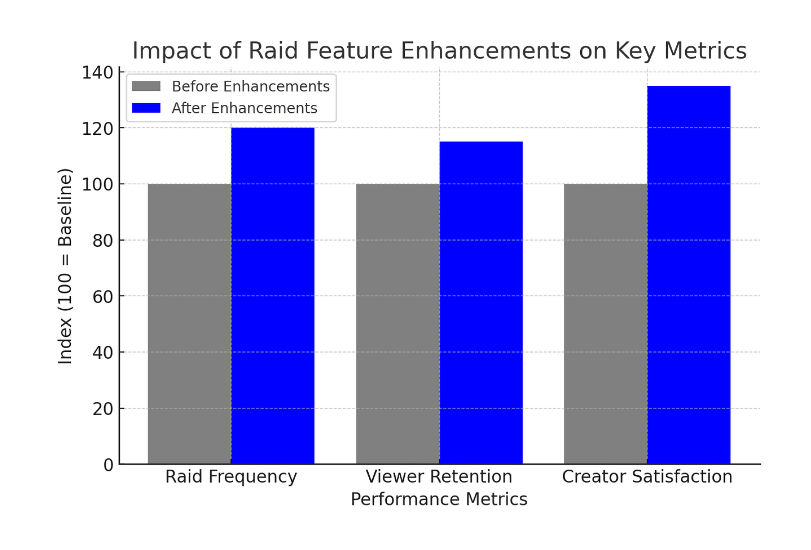

My Role: Senior Product Designer, Streamer Success Team
Twitch’s Raid feature allows content creators to redirect their live audience to another channel at the end of a broadcast, fostering community engagement and helping viewers discover new content. However, creators were facing challenges in selecting appropriate raid targets, often relying on manual searches or personal networks. To address this, we implemented enhancements to the Raid feature, aiming to streamline the process and support content creator growth. As Emmett Shear, Twitch’s co-founder, once stated:
Twitch is about bringing people together every day. The Raid feature is a core part of how we empower creators to build and support each other’s communities.
Video of a content creator being Raided
Twitch’s mission is to "create belonging by enabling content creators to build community." This mission emphasizes the platform’s commitment to fostering connections among creators and their audiences, cultivating interactive and engaging communities. A successful content creator on Twitch is typically measured by:
Community Engagement
Active participation from viewers through chat, subscriptions, and other forms of support
Follower Growth
A steady increase in followers, indicating rising popularity and reach
Consistency and Quality
Regular streaming schedules and high-quality content that resonates with the audience
Monetization & Retention
Increasing revenue streams via subscriptions, bits, sponsorships, and ad revenue while maintaining viewer retention
Raiding on Twitch originally could only be done by using a chat command
Mocks of the second iteraction of Raids I worked on that included additional UI across devices that gave viewers more control on their participation in Raiding
But despite the popularity of Raids, content creators encountered several pain points:
1. Difficulty Finding Relevant Raid Targets
Creators spent excessive time manually searching for appropriate channels, often relying on personal relationships rather than data-driven insights. A mid-tier Twitch partner said in an user interview:
I want to support smaller streamers, but it takes too long to find the right one
2. Low Viewer Retention Post-Raid
Many Raids resulted in significant viewer drop-off shortly after transitioning to the new channel. According to engagement reports:
45% of Raided viewers leave within the first five minutes
3. Limited Raid Personalization
The existing system lacked filtering options to help creators choose relevant raid targets aligned with their audience’s interests. In a feedback survey a streamer reported:
I'd love to raid people who play similar games to me, but the current system doesn’t help with that
4. Potential for Harassment
Some creators experienced disruptive behavior from unsolicited raids. A Twitch Affiliate shared:
I had a hate raid once, and it took my mods 20 minutes to control it
To enhance the Raid feature, we followed a structured Design Thinking approach:
1. Empathize
User Interviews
The team conducted in-depth interviews with over 150 content creators to gain insights into their Raiding experiences, challenges, and desires.
Engagement Metrics Analysis
By examining data such as viewer drop-off rates post-raid, the team identified patterns indicating low retention.
Community Feedback Review
The team analyzed feedback from forums, social media, and support tickets to understand negative Raid experiences, including harassment issues.
2. Define
Problem Statements
The team synthesized findings to articulate core issues:
Difficulty in selecting appropriate raid targets
Low viewer retention post-raid
Lack of personalization in Raid options
Exposure to potential harassment through Raids
Success Metrics
The team established clear objectives, including increasing raid frequency, improving viewer retention, and enhancing creator satisfaction.
3. Ideate
Brainstorming Sessions
The team explored various solutions such as personalized Raid recommendations, advanced filtering options, and enhanced moderation tools.
Machine Learning Models
We considered employing algorithms to analyze content similarity and viewer behavior, aiming to suggest relevant Raid targets.
4. Prototype
Feature Development
The team created prototypes for a Raid Quick Action button and advanced filtering options, integrating real-time data to assist creators in selecting Raid targets.
Gif of a Figma prototype used in user testing showcasing a new user flow with smarter defaults
Gif of a Figma prototype used in user testing showcasing a new user flow with enhanced filtering
Gif of a Figma prototype used in user testing showcasing a new user flow with more granular data
User Testing
A select group of content creators interacted with these prototypes, providing feedback on usability and effectiveness.
5. Test
Beta Launch
The team rolled out the enhanced features to 500 content creators, collecting both qualitative feedback and quantitative data.
Data Analysis
They assessed metrics such as Raid frequency, viewer retention, and incident reports to evaluate the impact of the new features.
Implemented features after testing and iteration
A video done by a content creator showcasing the new Raid enhancements
1. Raid Quick Action Button
Provides real-time suggestions for potential Raid targets based on factors like viewer overlap, content type, and past Raid interactions. Reduced the average Raid selection time from 90 seconds to 30 seconds, streamlining the process. A Twitch Partner shared:
This makes Raiding so much easier! I can focus on saying goodbye to my community instead of scrambling to find someone.
2. Advanced Filtering Options
Allows creators to filter potential Raid targets by viewer count, stream duration, content category, language, and past collaborations. Increased the likelihood of relevant Raids, leading to a 15% rise in viewer retention post-raid. A beta tester commented:
Now I can find someone in my niche without manually scrolling through channels
3. Safety and Moderation Enhancements
Introduced Raid Controls, enabling creators to restrict Raids to followers, mutuals, or approved lists. Added moderation tools to detect and mitigate potential raid-based harassment. Led to a 30% decrease in negative Raid reports. A partnered creator noted
Hate Raids have been a big issue. This is a game-changer for small streamers.
4. Data-Driven Raid Insights
Implemented post-raid analytics, showing viewer retention, engagement metrics, and new follower conversion rates. Creators using these insights adjusted Raid strategies, leading to a 20% increase in new follower retention. A Twitch Affiliate shared:
I love seeing how many people stick around after a raid, it helps me refine my approach!

Testing and results during the beta phase, Twitch observed notable improvements in key metrics:
Increased Raid Engagement: Content creators utilizing the new features reported a 20% increase in Raid frequency.
Higher Viewer Retention: Channels Raided through the enhanced system experienced a 15% increase in viewer retention during the first 10 minutes post-raid.
Greater Creator Satisfaction: Feedback surveys indicated that 85% of participating content creators felt more confident in their Raid choices due to improved recommendations and filtering options.
How these enhancements directly support Twitch’s mission and goals
Strengthening Community Bonds
By making Raiding easier and more effective, content creators can connect their communities with others, fostering a sense of belonging and mutual support.
Facilitating Growth
Improved Raid functionalities enable content creators to reach new audiences, promoting follower growth and increased engagement.
Enhancing Content Discovery
With personalized Raid suggestions and filtering options, viewers are introduced to content that aligns with their interests, enriching their platform experience.
Improving Safety & Retention
By implementing moderation tools and raid controls, Twitch mitigates negative experiences and fosters a more positive environment for creators.
Conclusion
By applying design thinking principles and incorporating direct feedback from the creator community, we successfully enhanced the Raid feature to better serve content creators’ needs. These improvements not only streamlined the raid selection process but also contributed to increased community engagement and content creator satisfaction, aligning with Twitch’s broader mission of building an interconnected and thriving platform. Through continuous iteration and data-driven refinements, Twitch remains committed to empowering content creators, fostering community engagement, and enhancing discoverability, all of which are essential for long-term platform success.